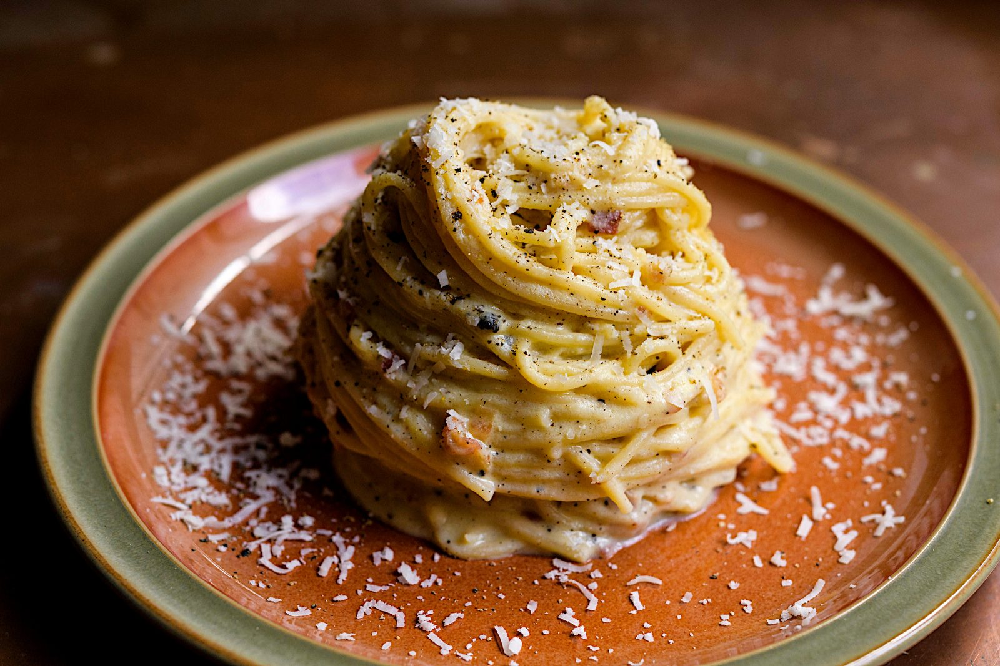

CARBONARA
ส่วนผสม

- สปาเก็ตตี้แห้ง 200 กรัม
- Cooking Cream 1 ถ้วย
- เบคอน หั่นชิ้นเล็ก 1 ถ้วย
- เนยสดเค็ม 1 ช้อนโต๊ะ
- ไข่ไก่ (เบอร์ 3) 3 ฟอง
- กระเทียมจีน 7-8 กลีบ
- หอมหัวใหญ่ซอย 2/3 ถ้วย
- ชีสเชดดาร์ 3 ช้อนโต๊ะ
- น้ำต้มเส้น 4 ถ้วย
- น้ำมันเจียวเบคอน 2 ช้อนโต๊ะ
- ชีสพาร์เมซาน ตามชอบ
- เกลือ เล็กน้อย สำหรับใส่ในน้ำต้มเส้น
- น้ำตาลทราย เล็กน้อย
- พริกไทยป่น
- ต้นหอมซอย
วิธีทำ
- ตั้งกระทะ ใส่น้ำมัน นำเบคอนเจียวกับน้ำมันให้เหลือง ตักขึ้น พักให้สะเด็ดน้ำมัน เตรียมไว้
- ตั้งหม้อ เติมน้ำ ต้มให้เดือด ใส่เกลือ ใส่เส้นสปาเก็ตตี้ลงต้ม ประมาณ 8 นาที
- จากนั้น ตั้งกระทะที่ใช้ทอดเบคอน ใส่กระเทียมลงผัดจนสุก ตามด้วย ใส่หอมหัวใหญ่ ผัดจนสุกใส ใส่เนย
ผัดให้เข้ากัน
- ใส่เบคอนที่ทอดไว้ เส้นสปาเกตตี้ และ Cooking Cream ปรุงรสด้วย น้ำตาล เพิ่มเค็มด้วยน้ำต้มเส้นเล็กน้อย
โรยพริกไทย เตรียมไว้
- จากนั้น เตรียมชามผสม ตอกไข่ ใส่ชีสเชดดาร์ชีส ตีให้เข้ากัน เทใส่เส้นสปาเกตตี้ที่ยังร้อนอยู่
คนให้เข้ากันอย่างรวดเร็ว ตักใส่จาน โรยด้วยชีสพาร์เมซาน และต้นหอมซอย พร้อมเสิร์ฟ